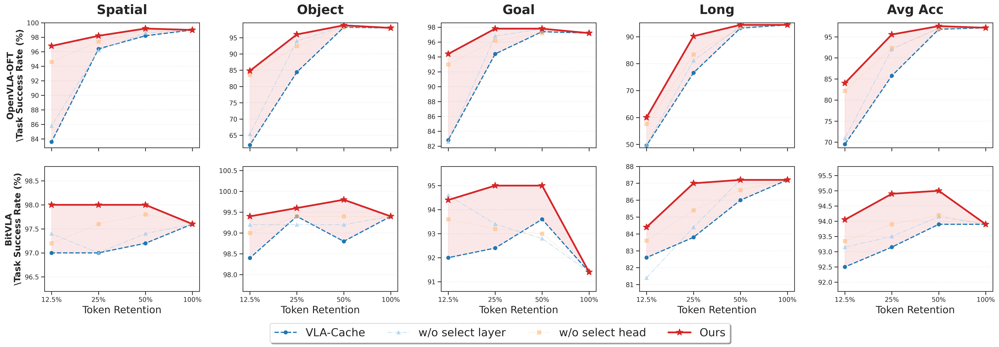

average success over VLA-Cache
Anonymous submission · Project page
Text–Vision Synergistic
Token Caching
A training-free framework for efficient vision–language–action inference
No analytics · No cookies · No external requests
In one sentence
TVCache uses language-conditioned evidence to decide which visual tokens and which network layers are reliable enough to reuse—without retraining the VLA.
FLOPs reduction vs. full-token inference
plus LIBERO, CALVIN, and real-robot tasks

Abstract
Efficient caching needs
cross-modal reliability.
Vision–language–action models enable generalizable robotic control but remain computationally expensive. Token caching is a training-free, plug-and-play alternative, yet existing methods do not fully exploit text–vision synergy: textual semantics should guide precise visual grounding and reliable cache allocation.
TVCache addresses two overlooked factors. It filters attention heads according to text–vision information focus, improving task-relevant visual grounding, and selects cache-reuse layers using text–vision entropy differences, avoiding unstable representations. Across four VLA models, two simulation benchmarks, and real-world robotic tasks, TVCache improves task success at matched token-retention ratios while maintaining comparable computational cost.
Why caching fails
Two mismatches, one missing signal
Existing reuse policies underuse the interaction between language and vision.
Token-level spatial misalignment
Uniformly averaging all attention heads mixes focused task evidence with diffuse responses, biasing relevance scores toward background regions.
Layer-level depth mismatch
Reusing too early propagates unstable cross-modal features; reusing too late repeats computation after representations have already stabilized.
Method
Text–vision synergy at two resolutions
TVCache refines both the spatial token decision and the depth-wise reuse decision.

01
What to reuse
Attention-head filtering
Each head is evaluated by semantic response intensity and spatial entropy. Heads with strong text-conditioned response and concentrated visual focus define a cleaner task-relevance map.
Shead(n) = α I(n) − β H(n)
Temporally stable tokens remain reusable only when they are not protected by the filtered task-relevance map.
02
Where to reuse
Entropy-guided layer selection
Layer-wise text–vision entropy acts as a stability signal. TVCache selects low-entropy reuse locations while enforcing a minimum interval between selected layers.
Kreuse = arg max Σ R(l)
s.t. |K| = K, |li − lj| ≥ dmin
A depth-aware retention schedule preserves more information in deeper layers and restores full retention at the terminal reuse layer.
Results
Stronger under tighter budgets
Average task success on LIBERO. All comparisons use matched token-retention ratios.
OpenVLA-OFT · most aggressive setting
+14.50 pp
over VLA-Cache at 12.5% token retention
VLA-Cache
TVCache
| Retention | VLA-Cache | TVCache | Gain |
|---|
TVCache improves the average success of all four evaluated VLA architectures at 25% token retention.
VLA-Adapter with TVCache, compared with 48.06% for VLA-Cache in Split ABC → D.
Average LIBERO success, compared with 69.50% for VLA-Cache.
Physical deployment
Robust gains beyond simulation
Franka Research 3 evaluation across SetKettle, PackPear, HangCup, and PotDuck.

Ablation
Both components matter
Removing either head filtering or layer selection reduces success, especially under aggressive token reduction.

Citation
Anonymous during review
Author and repository information will be added after the anonymous review period.
@inproceedings{anonymous2027tvcache,
title = {Text-Vision Synergistic Token Caching:
A Training-Free Framework for Efficient
Vision-Language-Action Inference},
author = {Anonymous Author(s)},
booktitle = {Under Review},
year = {2027}
}